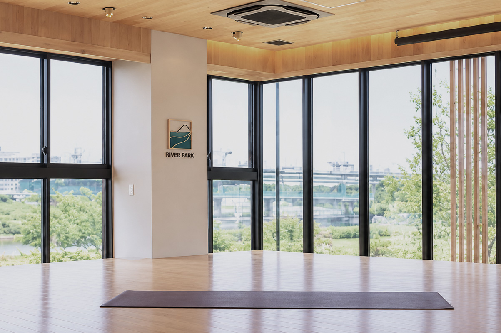
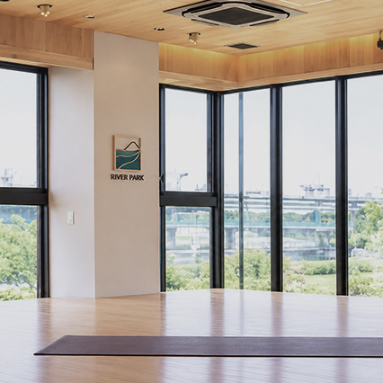

CONCEPT
コンセプト
わたしと自然が心地よくつながる毎日を、ここから。
川を眺め、風を感じながら、自分のペースで心と身体をほどいていく。
日常の延長線上にある、豊かな自然とともにある心地よい暮らしをお届けします。

WHY SEISEKI-SAKURAGAOKA & TAMA RIVER
なぜ「聖蹟桜ヶ丘×多摩川」なのか

都心から約30分、駅から徒歩5分の水辺のオアシス
新宿から京王線特急で約30分。聖蹟桜ヶ丘駅西口から桜通りを抜けてわずか徒歩5分で、目の前にはどこまでも広がる空と多摩川の清らかな水辺が広がります。
多摩川の豊かな自然環境と、生活利便性に優れた街の機能が心地よく調和する聖蹟桜ヶ丘。忙しい日々の合間に少し足を伸ばすだけで、川のせせらぎや土の匂い、季節の移ろいを五感で感じられる特別なサードプレイスです。
アクセスの詳細を見る3 CORE VALUES
RIVER PARKが大切にする3つの心地よさ

インドアの快適さとアウトドアの開放感がシームレスにつながる空間
約100㎡の無垢材スタジオでのヨガ・ピラティスから、一歩外へ踏み出して楽しむ多摩川SUPや外ヨガまで。天候やその日の気分に合わせて、屋内の快適さと自然の開放感を自由に選べます。

「競わない・比べない」身体だけでなく心も整えるプログラム
人と競い合う激しいトレーニングではなく、自分の内なる呼吸や身体の声に優しく耳を澄ませる時間を大切にしています。深いリラクゼーションが自律神経を整え、日々の緊張をほどきます。

運動する日もしない日も、コーヒー片手に過ごせるサードプレイス
多摩川を一望する会員制ワークラウンジでテレワークに没頭したり、運動後にこだわりのコーヒーを味わったり。自宅でも職場でもない、心が自然体に戻れる場所としていつでもご利用いただけます。
A DAY AT RIVER PARK
RIVER PARKでの1日の過ごし方
川辺の朝ラン＆木漏れ日のパークヨガ
澄んだ朝の空気の中、多摩川河川敷を軽くランニング。芝生にヨガマットを敷いて深呼吸すれば、眠っていた身体の感覚が心地よく目覚めます。
川のせせらぎを感じるラウンジでワーク＆カフェ
2階の会員制ワークラウンジで集中してリモートワーク。全席電源と高速Wi-Fiを完備し、水辺の美しいパノラマビューがクリエイティブな発想を後押しします。
放課後のボルダリングとお子様の挑戦時間
放課後は1Fボルダリングジムや河川敷でのキッズダンスレッスン。身体の動かし方や柔軟性を育み、壁を登り切った達成感の笑顔が広がります。
仕事帰りのアロマヨガと清潔なシャワーでリセット
1日のデスクワークで疲れた肩や背中を、天然アロマの優しい香りとヨガでほどく時間。清潔なシャワーで汗を流し、軽やかな足取りで家路へ。
3 YEARS OF RIVER PARK
ムービーで見るRIVER PARKの歩み
オープン以来、地域のみなさまとともに育んできたRIVER PARK 聖蹟桜ヶ丘の3年間。
多摩川の四季の移ろいとともに紡いできた温かなコミュニティと、自然体で健やかな日々のダイジェスト映像をご覧ください。
RIVER PARK 聖蹟桜ヶ丘 3周年記念オリジナルムービー
FIRST STEP
初めての方へ・体験のご案内
運動が久しぶりの方も、ヨガやボルダリングが初めての方も安心してお越しいただけます。
館内見学は営業時間中いつでも無料で承っております。まずは多摩川の心地よい風を感じに遊びにいらしてください。
Webから体験プログラムを予約
Webカレンダーからご希望の日時やクラス（ヨガ・ピラティス・SUP・ボルダリング等）をお選びいただけます。お電話でのご相談も歓迎です。
手ぶら感覚で気軽にご来館
動きやすい服装とお飲み物があればご参加いただけます。ヨガマットやボルダリングシューズ・チョーク等の専用備品はすべて完備しています。
多摩川の自然の中で心地よくリフレッシュ
インストラクターが親切丁寧にサポート。体験後は清潔なシャワールームやラウンジをご利用いただき、心身の心地よい変化をご体感ください。